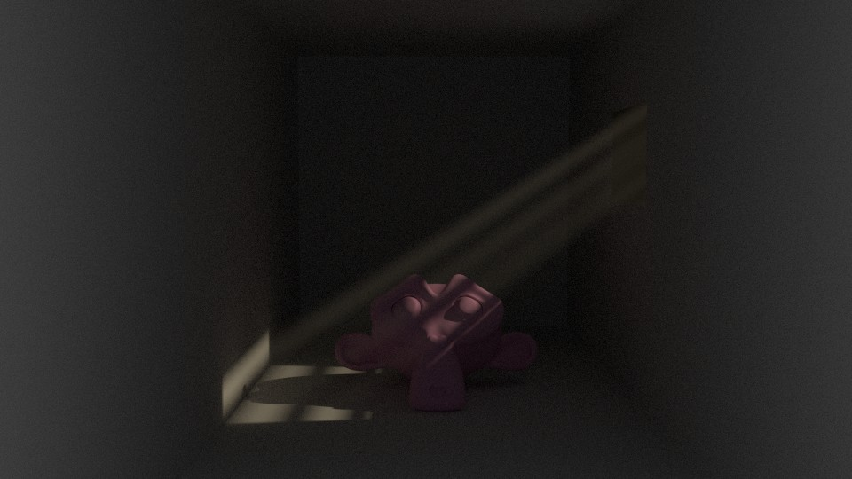
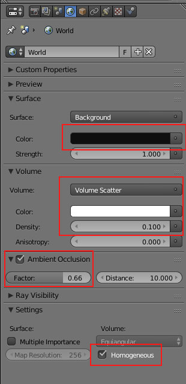
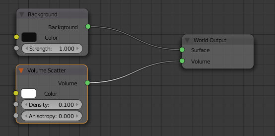
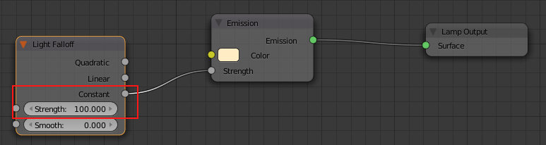
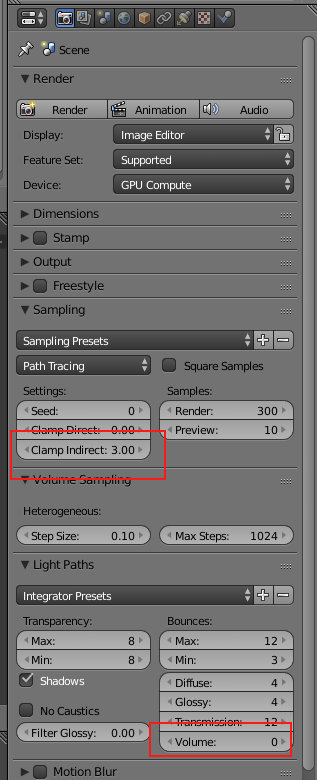

Volumetric lighting é uma técnica para adicionar efeitos de iluminação numa cena renderizada, permitindo ver raios/colunas de luz brilhando através do ambiente. O termo God Rays é também diversas vezes utilizado mas sobretudo quando a fonte de luz é o sol.
Antes de ler este texto, verifique se já consultou Volumetrics no Cycles.

A cena é composta pelos seguintes elementos:
O World tem um nó Volume Scatter com Density 0.100 e cor branco (FFFFFF). Foi ativado o Ambient Occlusion para iluminar as áreas mais escuras.
Foi ativada a opção Homogeneous (mais rápido a renderizar) o que significa que o Blender vai tratar o World como tendo a mesma densidade (densidade constante).
 Na configuração da Spot foi introduzido um nó Light Falloff (Color) para que a intensidade da Spot seja constante (comporta-se como uma Sun). Deste modo, a luz vai ter uma intensidade constante em vez de dissipar com a distância (= quanto mais longe da origem menos forte é a iluminação). A luz tem ainda um tom amarelado.
Para acelerar um pouco a renderização, definimos o Clamp Indirect para 3 (tem impacto na renderização mas pode ser quase invisível, depende da cena) e o Volume para 0 (não é fisicamente realista, luz não vai espalhar-se de forma realista, mas acelera a renderização e permite um resultado mais interessante)
Esta técnica implica alhuma morosidade adicional na renderização. O nó Sun Beams permite adicionar um efeito similar em pós-produção. É bastante mais rápido mas mais limitado.